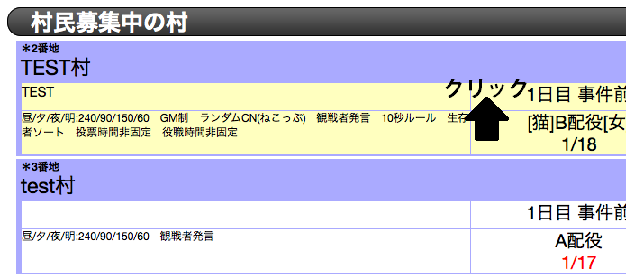
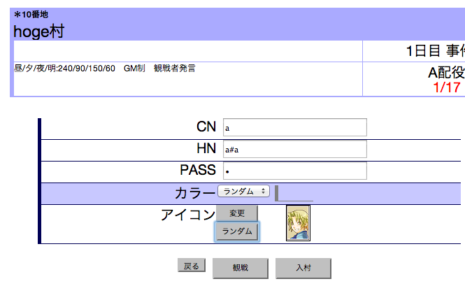
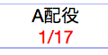

トップ画面で参加したい村をクリックします。

ログイン画面でCN, HN, パスワードを入力して、入村ボタンを押します。
観戦者として入村する場合は、何も入力せずに観戦入村ボタンを押します。

その村を建てた人が必ずGM/仮GMになります。
村を建てた人が入村するまで、他のプレイヤーは入村できません。
GM/仮GMがまだ入村していない村は人数が赤色で表示されます。

CN(キャラクターネーム)
ゲーム中、誰からでも見る事ができる名前です。
HN(ハンドルネーム)
ゲーム終了後に公開される、あなた(プレイヤー)自身を表す名前です。
HNの後ろに 半角の#と好きな文字列で、トリップキーが付けられます。(なりすまし防止)
トリップキーに対して何戦ゲームに参加したか・何回通報によるペナルティを受けたかという情報が記録されます。
PASS(パスワード)
再入村する時に必要なパスワードです。
再入村時には、 HN(トリップ込み), PASSが必要になります。